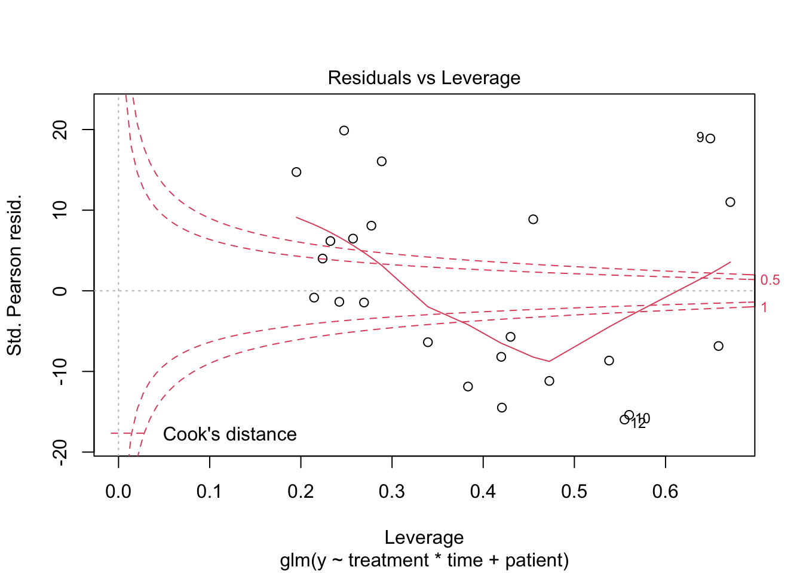

Sequencing: GLM for gene expression
Koen Van den Berge
Last compiled on 26 November, 2021
suppressPackageStartupMessages(library(SummarizedExperiment))
se <- readRDS("data/seParathyroid.rds")## extract data from one gene
y <- assays(se)$counts[5,]
## extract covariates for each sample
treatment <- colData(se)$treatment
table(treatment)## treatment
## Control DPN OHT
## 7 8 8## time
## 24h 48h
## 11 12## patient
## 1 2 3 4
## 6 6 6 5## , , time = 24h
##
## treatment
## patient Control DPN OHT
## 1 1 1 1
## 2 1 1 1
## 3 1 1 1
## 4 0 1 1
##
## , , time = 48h
##
## treatment
## patient Control DPN OHT
## 1 1 1 1
## 2 1 1 1
## 3 1 1 1
## 4 1 1 1## dotplot for each treatment, matching patient samples
df <- data.frame(y=y,
treatment=treatment,
time=time,
patient=patient)
ggplot(df, aes(x=time, y=y)) +
geom_point() +
geom_line(aes(group = patient)) +
facet_grid(.~treatment) +
theme_classic()1 Poisson GLM

2 Negative binomial model

##
## Call:
## glm.nb(formula = y ~ treatment * time + patient, init.theta = 5.797944761,
## link = log)
##
## Deviance Residuals:
## Min 1Q Median 3Q Max
## -1.7692 -0.8726 -0.2641 0.8303 1.5579
##
## Coefficients:
## Estimate Std. Error z value Pr(>|z|)
## (Intercept) 5.622089 0.279514 20.114 < 2e-16 ***
## treatmentDPN 0.415319 0.324036 1.282 0.199945
## treatmentOHT 0.620294 0.323896 1.915 0.055479 .
## time48h -0.854023 0.325959 -2.620 0.008792 **
## patient2 0.882139 0.241916 3.646 0.000266 ***
## patient3 0.038663 0.242737 0.159 0.873450
## patient4 0.008082 0.258521 0.031 0.975059
## treatmentDPN:time48h 0.162526 0.440457 0.369 0.712132
## treatmentOHT:time48h -0.124510 0.440453 -0.283 0.777417
## ---
## Signif. codes: 0 '***' 0.001 '**' 0.01 '*' 0.05 '.' 0.1 ' ' 1
##
## (Dispersion parameter for Negative Binomial(5.7979) family taken to be 1)
##
## Null deviance: 90.709 on 22 degrees of freedom
## Residual deviance: 23.560 on 14 degrees of freedom
## AIC: 308.63
##
## Number of Fisher Scoring iterations: 1
##
##
## Theta: 5.80
## Std. Err.: 1.69
##
## 2 x log-likelihood: -288.6322.1 Statistical inference
We will test seven different contrasts.
L <- matrix(0, nrow = length(coef(mNB)), ncol = 7)
rownames(L) <- names(coef(mNB))
colnames(L) <- c("DPNvsCON24", "DPNvsCON48",
"OHTvsCON24", "OHTvsCON48",
"DPNvsCONInt", "OHTvsCONInt",
"OHTvsDPNInt")
# DPN vs control at 24h
L[2,"DPNvsCON24"] <- 1
# DPN vs control at 48h
L[c(2,8),"DPNvsCON48"] <- 1
# OHT vs control at 24h
L[3,"OHTvsCON24"] <- 1
# OHT vs control at 48h
L[c(3,9),"OHTvsCON48"] <- 1
# DPN control interaction
L[8,"DPNvsCONInt"] <- 1
# OHT control interaction
L[9,"OHTvsCONInt"] <- 1
# OHT DPN interaction
L[c(9,8),"OHTvsDPNInt"] <- c(1, -1)
L## DPNvsCON24 DPNvsCON48 OHTvsCON24 OHTvsCON48 DPNvsCONInt
## (Intercept) 0 0 0 0 0
## treatmentDPN 1 1 0 0 0
## treatmentOHT 0 0 1 1 0
## time48h 0 0 0 0 0
## patient2 0 0 0 0 0
## patient3 0 0 0 0 0
## patient4 0 0 0 0 0
## treatmentDPN:time48h 0 1 0 0 1
## treatmentOHT:time48h 0 0 0 1 0
## OHTvsCONInt OHTvsDPNInt
## (Intercept) 0 0
## treatmentDPN 0 0
## treatmentOHT 0 0
## time48h 0 0
## patient2 0 0
## patient3 0 0
## patient4 0 0
## treatmentDPN:time48h 0 -1
## treatmentOHT:time48h 1 12.1.1 Wald test
beta <- matrix(coef(mNB), ncol = 1)
waldStats <- c()
for(ll in 1:ncol(L)){
curL <- L[,ll,drop=FALSE]
curWald <- t(curL) %*% beta %*% solve(t(curL) %*% vcov(mNB) %*% curL) %*% t(beta) %*% curL
waldStats[ll] <- curWald
}
waldStats## [1] 1.64277658 3.75083592 3.66762230 2.75849551 0.13615681 0.07991173 0.46952521## [1] 0.19994494 0.05278111 0.05547928 0.09673917 0.71213195 0.77741707 0.493205672.1.2 Likelihood ratio test
Implementing these contrasts using a likelihood ratio test is possible, but is not trivial. It would require a reparameterization of our model using the contrasts of interest. In this reparameterization, one variable may correspond to one contrast. We may then compare a full to an alternative model, dropping this variable, using a likelihood ratio test. While it is important to know that this is possible, we will not implement the reparameterization ourselves as it is considered outside the scope of this course.
3 Residuals
3.1 Deviance residuals
## residual deviance
sum(2*(dnbinom(x=y, mu=y, size=mNB$theta, log=TRUE) - dnbinom(x=y, mu=fitted(mNB), size=mNB$theta, log=TRUE)))## [1] 23.5601## deviance residual
devResid <- sign(y-fitted(mNB)) * sqrt(2*(dnbinom(x=y, mu=y, size=mNB$theta, log=TRUE) -
dnbinom(x=y, mu=fitted(mNB), size=mNB$theta, log=TRUE)))
range(devResid - resid(mNB, type="deviance"))## [1] -8.070651e-10 9.068435e-104 Re-analysis upon basic normalization
A very simple normalization would use an offset to account for sequencing depth. Verify if our hypothesis test results remain upon using this basic normalization.
4.1 Statistical inference
5 Negative binomial model, corrected for sequencing depth
library(MASS)
mNBOffset <- glm.nb(y ~ treatment*time + patient +
offset(log(seqDepth)))
plot(mNBOffset)##
## Call:
## glm.nb(formula = y ~ treatment * time + patient + offset(log(seqDepth)),
## init.theta = 82.98036979, link = log)
##
## Deviance Residuals:
## Min 1Q Median 3Q Max
## -2.1746 -0.6788 0.1520 0.5961 1.6033
##
## Coefficients:
## Estimate Std. Error z value Pr(>|z|)
## (Intercept) -10.11672 0.08217 -123.120 < 2e-16 ***
## treatmentDPN 0.09023 0.09418 0.958 0.338022
## treatmentOHT 0.13403 0.09362 1.432 0.152224
## time48h -0.89874 0.10008 -8.980 < 2e-16 ***
## patient2 0.49680 0.07174 6.925 4.37e-12 ***
## patient3 -0.27195 0.07419 -3.666 0.000247 ***
## patient4 -0.06219 0.07888 -0.788 0.430428
## treatmentDPN:time48h 0.15540 0.13277 1.170 0.241820
## treatmentOHT:time48h 0.17758 0.13292 1.336 0.181560
## ---
## Signif. codes: 0 '***' 0.001 '**' 0.01 '*' 0.05 '.' 0.1 ' ' 1
##
## (Dispersion parameter for Negative Binomial(82.9804) family taken to be 1)
##
## Null deviance: 422.284 on 22 degrees of freedom
## Residual deviance: 24.637 on 14 degrees of freedom
## AIC: 253.94
##
## Number of Fisher Scoring iterations: 1
##
##
## Theta: 83.0
## Std. Err.: 34.2
##
## 2 x log-likelihood: -233.9395.1 Wald tests
betaOffset <- matrix(coef(mNBOffset), ncol = 1)
waldStatsOffset <- c()
for(ll in 1:ncol(L)){
curL <- L[,ll,drop=FALSE]
curWald <- t(curL) %*% betaOffset %*% solve(t(curL) %*% vcov(mNBOffset) %*% curL) %*% t(betaOffset) %*% curL
waldStatsOffset[ll] <- curWald
}
waldStatsOffset## [1] 0.91792044 6.84868664 2.04982086 10.79379449 1.36995308 1.78481023
## [7] 0.03194304## [1] 0.338021590 0.008870646 0.152224100 0.001018409 0.241819946 0.181559766
## [7] 0.858152733LS0tCnRpdGxlOiAnU2VxdWVuY2luZzogR0xNIGZvciBnZW5lIGV4cHJlc3Npb24nCmF1dGhvcjogIktvZW4gVmFuIGRlbiBCZXJnZSIKZGF0ZTogIkxhc3QgY29tcGlsZWQgb24gYHIgZm9ybWF0KFN5cy50aW1lKCksICclZCAlQiwgJVknKWAiCm91dHB1dDogCiAgcGRmX2RvY3VtZW50OgogICAgdG9jOiB0cnVlCiAgICBudW1iZXJfc2VjdGlvbnM6IHRydWUKICAgIGxhdGV4X2VuZ2luZTogeGVsYXRleAogIGh0bWxfZG9jdW1lbnQ6CiAgICB0b2M6IHRydWUKICAgIHRvY19mbG9hdDogdHJ1ZQotLS0KCmBgYHtyIGZ1bmN0aW9ucywgaW5jbHVkZT1GQUxTRX0KIyBBIGZ1bmN0aW9uIGZvciBjYXB0aW9uaW5nIGFuZCByZWZlcmVuY2luZyBpbWFnZXMKZmlnIDwtIGxvY2FsKHsKICAgIGkgPC0gMAogICAgcmVmIDwtIGxpc3QoKQogICAgbGlzdCgKICAgICAgICBjYXA9ZnVuY3Rpb24ocmVmTmFtZSwgdGV4dCkgewogICAgICAgICAgICBpIDw8LSBpICsgMQogICAgICAgICAgICByZWZbW3JlZk5hbWVdXSA8PC0gaQogICAgICAgICAgICBwYXN0ZSgiRmlndXJlICIsIGksICI6ICIsIHRleHQsIHNlcD0iIikKICAgICAgICB9LAogICAgICAgIHJlZj1mdW5jdGlvbihyZWZOYW1lKSB7CiAgICAgICAgICAgIHJlZltbcmVmTmFtZV1dCiAgICAgICAgfSkKfSkKYGBgIAoKYGBge3IsIGVjaG89RkFMU0UsIG1lc3NhZ2U9RkFMU0UsIGV2YWw9VFJVRX0Kc3VwcHJlc3NQYWNrYWdlU3RhcnR1cE1lc3NhZ2VzKHsKICBsaWJyYXJ5KGtuaXRyKQogIGxpYnJhcnkocm1hcmtkb3duKQogIGxpYnJhcnkoZ2dwbG90MikKfSkKYGBgCgoKYGBge3J9CnN1cHByZXNzUGFja2FnZVN0YXJ0dXBNZXNzYWdlcyhsaWJyYXJ5KFN1bW1hcml6ZWRFeHBlcmltZW50KSkKc2UgPC0gcmVhZFJEUygiZGF0YS9zZVBhcmF0aHlyb2lkLnJkcyIpCmBgYAoKCmBgYHtyfQojIyBleHRyYWN0IGRhdGEgZnJvbSBvbmUgZ2VuZQp5IDwtIGFzc2F5cyhzZSkkY291bnRzWzUsXQoKIyMgZXh0cmFjdCBjb3ZhcmlhdGVzIGZvciBlYWNoIHNhbXBsZQp0cmVhdG1lbnQgPC0gY29sRGF0YShzZSkkdHJlYXRtZW50CnRhYmxlKHRyZWF0bWVudCkKdGltZSA8LSBjb2xEYXRhKHNlKSR0aW1lCnRhYmxlKHRpbWUpCnBhdGllbnQgPC0gY29sRGF0YShzZSkkcGF0aWVudAp0YWJsZShwYXRpZW50KQoKdGFibGUocGF0aWVudCwgdHJlYXRtZW50LCB0aW1lKQoKYm94cGxvdCgoeS9jb2xTdW1zKGFzc2F5cyhzZSkkY291bnRzKSkgfiBpbnRlcmFjdGlvbih0cmVhdG1lbnQsIHRpbWUpKQojIyBkb3RwbG90IGZvciBlYWNoIHRyZWF0bWVudCwgbWF0Y2hpbmcgcGF0aWVudCBzYW1wbGVzCmRmIDwtIGRhdGEuZnJhbWUoeT15LAogICAgICAgICAgICAgICAgIHRyZWF0bWVudD10cmVhdG1lbnQsCiAgICAgICAgICAgICAgICAgdGltZT10aW1lLAogICAgICAgICAgICAgICAgIHBhdGllbnQ9cGF0aWVudCkKZ2dwbG90KGRmLCBhZXMoeD10aW1lLCB5PXkpKSArCiAgZ2VvbV9wb2ludCgpICsKICBnZW9tX2xpbmUoYWVzKGdyb3VwID0gcGF0aWVudCkpICsgCiAgZmFjZXRfZ3JpZCgufnRyZWF0bWVudCkgKwogIHRoZW1lX2NsYXNzaWMoKQpgYGAKCgojIFBvaXNzb24gR0xNCgpgYGB7cn0KbSA8LSBnbG0oeSB+IHRyZWF0bWVudCp0aW1lICsgcGF0aWVudCwKICAgICAgICAgZmFtaWx5ID0gInBvaXNzb24iKQpwbG90KG0pICMgRXh0cmEtUG9pc3NvbiB2YXJpYXRpb24/CmBgYAoKIyMgQ2hlY2sgb3ZlcmRpc3BlcnNpb24KCmBgYHtyfQplUGVhcnNvbiA8LSByZXNpZChtLCB0eXBlPSJwZWFyc29uIikKbiA8LSBsZW5ndGgoeSkKcCA8LSBsZW5ndGgoY29lZihtKSkKc3VtKGVQZWFyc29uXjIpIC8gKG4tcCkgIyBodWdlIG92ZXJkaXNwZXJzaW9uLgpgYGAKCiMgTmVnYXRpdmUgYmlub21pYWwgbW9kZWwKCmBgYHtyfQpsaWJyYXJ5KE1BU1MpCm1OQiA8LSBnbG0ubmIoeSB+IHRyZWF0bWVudCp0aW1lICsgcGF0aWVudCkKcGxvdChtTkIpCnN1bW1hcnkobU5CKQpgYGAKCgojIyBTdGF0aXN0aWNhbCBpbmZlcmVuY2UKCldlIHdpbGwgdGVzdCBzZXZlbiBkaWZmZXJlbnQgY29udHJhc3RzLgoKYGBge3J9CkwgPC0gbWF0cml4KDAsIG5yb3cgPSBsZW5ndGgoY29lZihtTkIpKSwgbmNvbCA9IDcpCnJvd25hbWVzKEwpIDwtIG5hbWVzKGNvZWYobU5CKSkKY29sbmFtZXMoTCkgPC0gYygiRFBOdnNDT04yNCIsICJEUE52c0NPTjQ4IiwKICAgICAgICAgICAgICAgICAiT0hUdnNDT04yNCIsICJPSFR2c0NPTjQ4IiwKICAgICAgICAgICAgICAgICAiRFBOdnNDT05JbnQiLCAiT0hUdnNDT05JbnQiLAogICAgICAgICAgICAgICAgICJPSFR2c0RQTkludCIpCiMgRFBOIHZzIGNvbnRyb2wgYXQgMjRoCkxbMiwiRFBOdnNDT04yNCJdIDwtIDEKIyBEUE4gdnMgY29udHJvbCBhdCA0OGgKTFtjKDIsOCksIkRQTnZzQ09ONDgiXSA8LSAxCiMgT0hUIHZzIGNvbnRyb2wgYXQgMjRoCkxbMywiT0hUdnNDT04yNCJdIDwtIDEKIyBPSFQgdnMgY29udHJvbCBhdCA0OGgKTFtjKDMsOSksIk9IVHZzQ09ONDgiXSA8LSAxCiMgRFBOIGNvbnRyb2wgaW50ZXJhY3Rpb24KTFs4LCJEUE52c0NPTkludCJdIDwtIDEKIyBPSFQgY29udHJvbCBpbnRlcmFjdGlvbgpMWzksIk9IVHZzQ09OSW50Il0gPC0gMQojIE9IVCBEUE4gaW50ZXJhY3Rpb24KTFtjKDksOCksIk9IVHZzRFBOSW50Il0gPC0gYygxLCAtMSkKCkwKYGBgCgoKIyMjIFdhbGQgdGVzdAoKYGBge3J9CmJldGEgPC0gbWF0cml4KGNvZWYobU5CKSwgbmNvbCA9IDEpCndhbGRTdGF0cyA8LSBjKCkKZm9yKGxsIGluIDE6bmNvbChMKSl7CiAgY3VyTCA8LSBMWyxsbCxkcm9wPUZBTFNFXQogIGN1cldhbGQgPC0gdChjdXJMKSAlKiUgYmV0YSAlKiUgc29sdmUodChjdXJMKSAlKiUgdmNvdihtTkIpICUqJSBjdXJMKSAlKiUgdChiZXRhKSAlKiUgY3VyTAogIHdhbGRTdGF0c1tsbF0gPC0gY3VyV2FsZAp9Cgp3YWxkU3RhdHMKCnB2YWx1ZXMgPC0gMS1wY2hpc3Eod2FsZFN0YXRzLCBkZj0xKQpwdmFsdWVzCmBgYAoKCiMjIyBMaWtlbGlob29kIHJhdGlvIHRlc3QKCkltcGxlbWVudGluZyB0aGVzZSBjb250cmFzdHMgdXNpbmcgYSBsaWtlbGlob29kIHJhdGlvIHRlc3QgaXMgcG9zc2libGUsIGJ1dCBpcyBub3QgdHJpdmlhbC4KSXQgd291bGQgcmVxdWlyZSBhIHJlcGFyYW1ldGVyaXphdGlvbiBvZiBvdXIgbW9kZWwgdXNpbmcgdGhlIGNvbnRyYXN0cyBvZiBpbnRlcmVzdC4gSW4gdGhpcyByZXBhcmFtZXRlcml6YXRpb24sIG9uZSB2YXJpYWJsZSBtYXkgY29ycmVzcG9uZCB0byBvbmUgY29udHJhc3QuIFdlIG1heSB0aGVuIGNvbXBhcmUgYSBmdWxsIHRvIGFuIGFsdGVybmF0aXZlIG1vZGVsLCBkcm9wcGluZyB0aGlzIHZhcmlhYmxlLCB1c2luZyBhIGxpa2VsaWhvb2QgcmF0aW8gdGVzdC4KV2hpbGUgaXQgaXMgaW1wb3J0YW50IHRvIGtub3cgdGhhdCB0aGlzIGlzIHBvc3NpYmxlLCB3ZSB3aWxsIG5vdCBpbXBsZW1lbnQgdGhlIHJlcGFyYW1ldGVyaXphdGlvbiBvdXJzZWx2ZXMgYXMgaXQgaXMgY29uc2lkZXJlZCBvdXRzaWRlIHRoZSBzY29wZSBvZiB0aGlzIGNvdXJzZS4KCiMgUmVzaWR1YWxzCgojIyBEZXZpYW5jZSByZXNpZHVhbHMKCmBgYHtyfQojIyByZXNpZHVhbCBkZXZpYW5jZQpzdW0oMiooZG5iaW5vbSh4PXksIG11PXksIHNpemU9bU5CJHRoZXRhLCBsb2c9VFJVRSkgLSBkbmJpbm9tKHg9eSwgbXU9Zml0dGVkKG1OQiksIHNpemU9bU5CJHRoZXRhLCBsb2c9VFJVRSkpKQoKIyMgZGV2aWFuY2UgcmVzaWR1YWwKZGV2UmVzaWQgPC0gc2lnbih5LWZpdHRlZChtTkIpKSAqIHNxcnQoMiooZG5iaW5vbSh4PXksIG11PXksIHNpemU9bU5CJHRoZXRhLCBsb2c9VFJVRSkgLSAKICAgICAgICAgICAgICAgICAgICAgIGRuYmlub20oeD15LCBtdT1maXR0ZWQobU5CKSwgc2l6ZT1tTkIkdGhldGEsIGxvZz1UUlVFKSkpCgpyYW5nZShkZXZSZXNpZCAtIHJlc2lkKG1OQiwgdHlwZT0iZGV2aWFuY2UiKSkKcGxvdChkZXZSZXNpZCwgcmVzaWQobU5CLCB0eXBlPSJkZXZpYW5jZSIpKSA7IGFibGluZSgwLDEsIGNvbD0icmVkIikKCmBgYAoKIyMgUGVhcnNvbiByZXNpZHVhbHMKCmBgYHtyfQpwZWFyc1Jlc2lkIDwtICh5IC0gZml0dGVkKG1OQikpIC8gc3FydChmaXR0ZWQobU5CKSArIDEvbU5CJHRoZXRhICogZml0dGVkKG1OQileMikKcmFuZ2UocGVhcnNSZXNpZCAtIHJlc2lkKG1OQiwgdHlwZT0icGVhcnNvbiIpKQpwbG90KHg9cGVhcnNSZXNpZCwgeT1yZXNpZChtTkIsIHR5cGU9InBlYXJzb24iKSkgOyBhYmxpbmUoMCwxLCBjb2w9InJlZCIpCmBgYAoKCiMjIEdvb2RuZXNzLW9mLWZpdAoKYGBge3J9ClgyIDwtIHN1bShwZWFyc1Jlc2lkXjIpCjEtcGNoaXNxKFgyLCBkZj1sZW5ndGgoeSkgLSBsZW5ndGgoY29lZihtTkIpKSkKYGBgCgojIFJlLWFuYWx5c2lzIHVwb24gYmFzaWMgbm9ybWFsaXphdGlvbgoKQSB2ZXJ5IHNpbXBsZSBub3JtYWxpemF0aW9uIHdvdWxkIHVzZSBhbiBvZmZzZXQgdG8gYWNjb3VudCBmb3Igc2VxdWVuY2luZyBkZXB0aC4KVmVyaWZ5IGlmIG91ciBoeXBvdGhlc2lzIHRlc3QgcmVzdWx0cyByZW1haW4gdXBvbiB1c2luZyB0aGlzIGJhc2ljIG5vcm1hbGl6YXRpb24uCgpgYGB7cn0Kc2VxRGVwdGggPC0gY29sU3Vtcyhhc3NheXMoc2UpJGNvdW50cykKYGBgCgojIyBTdGF0aXN0aWNhbCBpbmZlcmVuY2UKCiMgTmVnYXRpdmUgYmlub21pYWwgbW9kZWwsIGNvcnJlY3RlZCBmb3Igc2VxdWVuY2luZyBkZXB0aAoKYGBge3J9CmxpYnJhcnkoTUFTUykKbU5CT2Zmc2V0IDwtIGdsbS5uYih5IH4gdHJlYXRtZW50KnRpbWUgKyBwYXRpZW50ICsKICAgICAgICAgICAgICAgIG9mZnNldChsb2coc2VxRGVwdGgpKSkKcGxvdChtTkJPZmZzZXQpCnN1bW1hcnkobU5CT2Zmc2V0KQpgYGAKCiMjIFdhbGQgdGVzdHMKCmBgYHtyfQpiZXRhT2Zmc2V0IDwtIG1hdHJpeChjb2VmKG1OQk9mZnNldCksIG5jb2wgPSAxKQp3YWxkU3RhdHNPZmZzZXQgPC0gYygpCmZvcihsbCBpbiAxOm5jb2woTCkpewogIGN1ckwgPC0gTFssbGwsZHJvcD1GQUxTRV0KICBjdXJXYWxkIDwtIHQoY3VyTCkgJSolIGJldGFPZmZzZXQgJSolIHNvbHZlKHQoY3VyTCkgJSolIHZjb3YobU5CT2Zmc2V0KSAlKiUgY3VyTCkgJSolIHQoYmV0YU9mZnNldCkgJSolIGN1ckwKICB3YWxkU3RhdHNPZmZzZXRbbGxdIDwtIGN1cldhbGQKfQoKd2FsZFN0YXRzT2Zmc2V0CgpwdmFsdWVzT2Zmc2V0IDwtIDEtcGNoaXNxKHdhbGRTdGF0c09mZnNldCwgZGY9MSkKcHZhbHVlc09mZnNldApgYGAKCg==